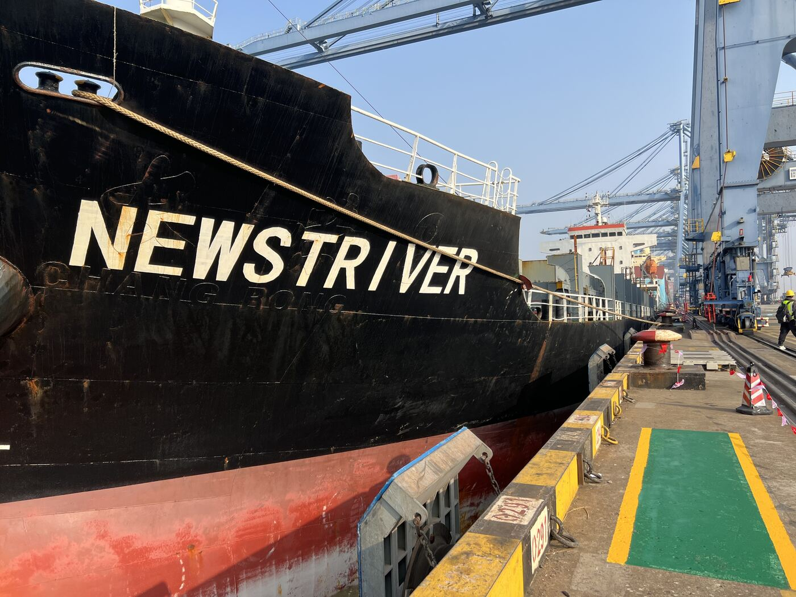
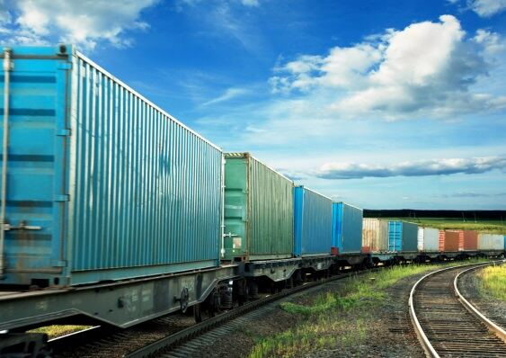
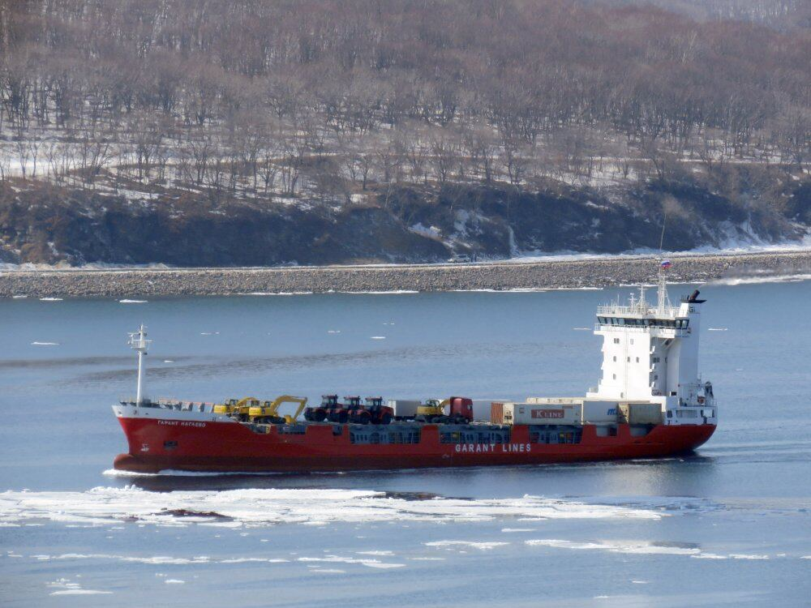
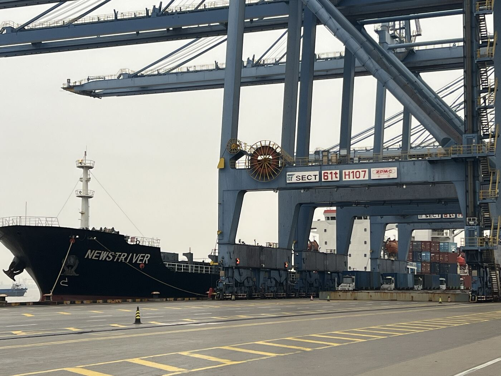
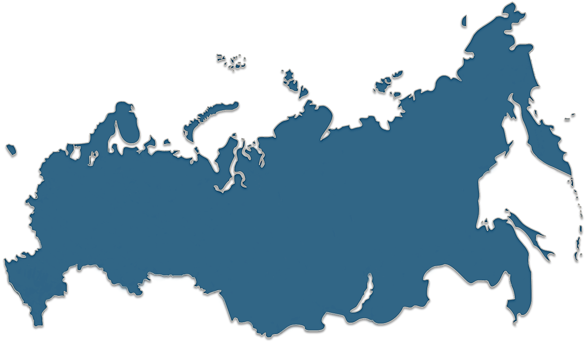
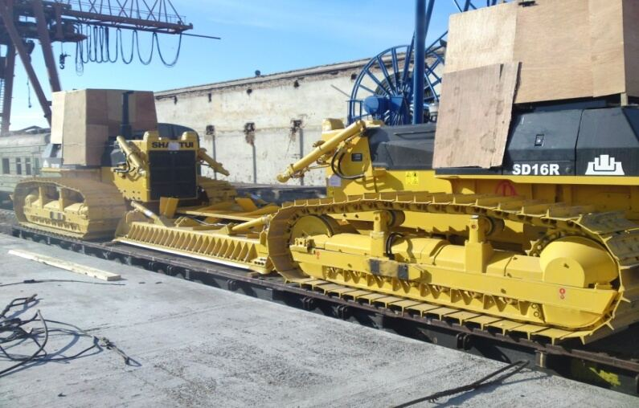

Опыт 25+ лет
Каждый специалист команды — минимум 15 лет в отрасли. Знаем, как решить нестандартную задачу.
Море, железная дорога и автотранспорт — в одном окне. Организуем перевозки контейнерных, генеральных и проектных грузов в Россию, из неё и транзитом через Дальний Восток.
«Гарант Интермодал» — профессиональный мультимодальный оператор. Мы организуем перевозки морем, по железной дороге и автотранспортом, управляем контейнерными линиями и оказываем агентские услуги в портах Дальнего Востока.
Подход модульный: можно заказать перевозку «под ключ» или отдельные звенья цепочки — выбор за вами.

Шесть причин, по которым клиенты остаются с нами годами.
Каждый специалист команды — минимум 15 лет в отрасли. Знаем, как решить нестандартную задачу.
Договоры с РЖД и железными дорогами СНГ — гибкие тарифы и предсказуемые сроки.
Два МПП типа «Сокол» и контейнеровоз «Гарант Нагаево» для каботажных линий.
Тягачи Scania, собственная площадка хранения порожних контейнеров.
Агенты в России, СНГ и Юго-Восточной Азии для сквозной организации перевозки.
Ежедневные обновления статуса: вы всегда знаете, где находится груз.
Основные направления. Полный перечень и подробности — на странице услуг.

Море, железная дорога и авто под одним договором или отдельными звеньями.
Подробнее
Владивосток — Магадан, Корсаков, Петропавловск-Камчатский, Анадырь.
Подробнее
Негабарит, тяжеловесы, целые заводы и объекты нефтегаза.
Подробнее
Судовое и грузовое агентирование в портах Дальнего Востока.
Подробнее
Порты Владивостока, Восточный (терминал ВСК) и Находка (терминал НМРП) — наши основные узлы. Отсюда идут морские каботажные линии на север и Сахалин, а контейнерные поезда — в Москву, Новосибирск и Екатеринбург.
Два многоцелевых судна типа «Сокол» (2014 г.) и контейнеровоз «Гарант Нагаево» обеспечивают регулярные каботажные линии. Суда эксплуатирует «Восточное судоходное товарищество».
Трубные колена, бульдозеры, рулонная сталь, краны, автомобили: берёмся за грузы, где нужна индивидуальная схема.



Клиенты и партнёры, с которыми у нас выстроено сотрудничество.
Логотипы партнёров заменят названия после согласования их использования с заказчиком
Оставьте маршрут и параметры груза — менеджер ответит в рабочее время.